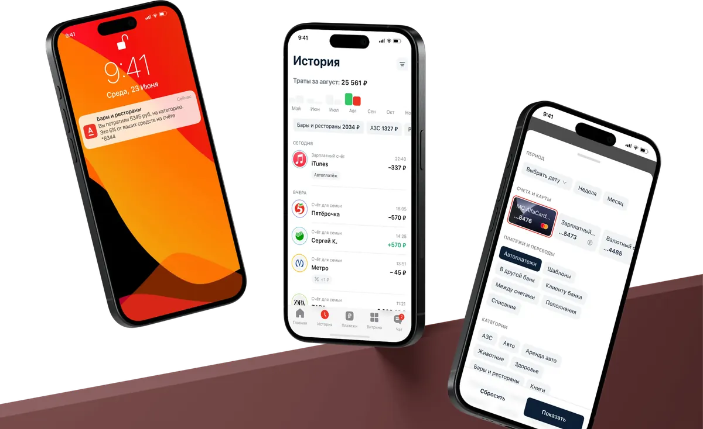
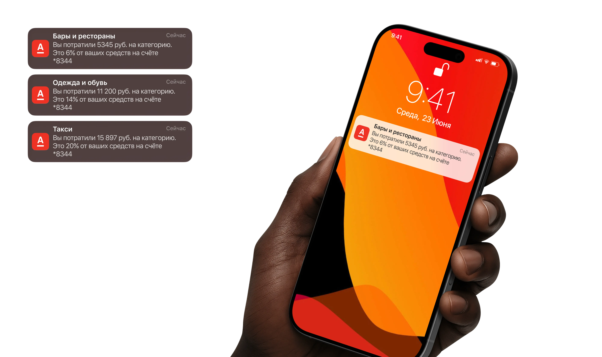
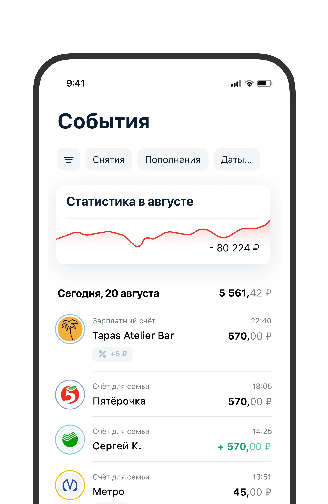
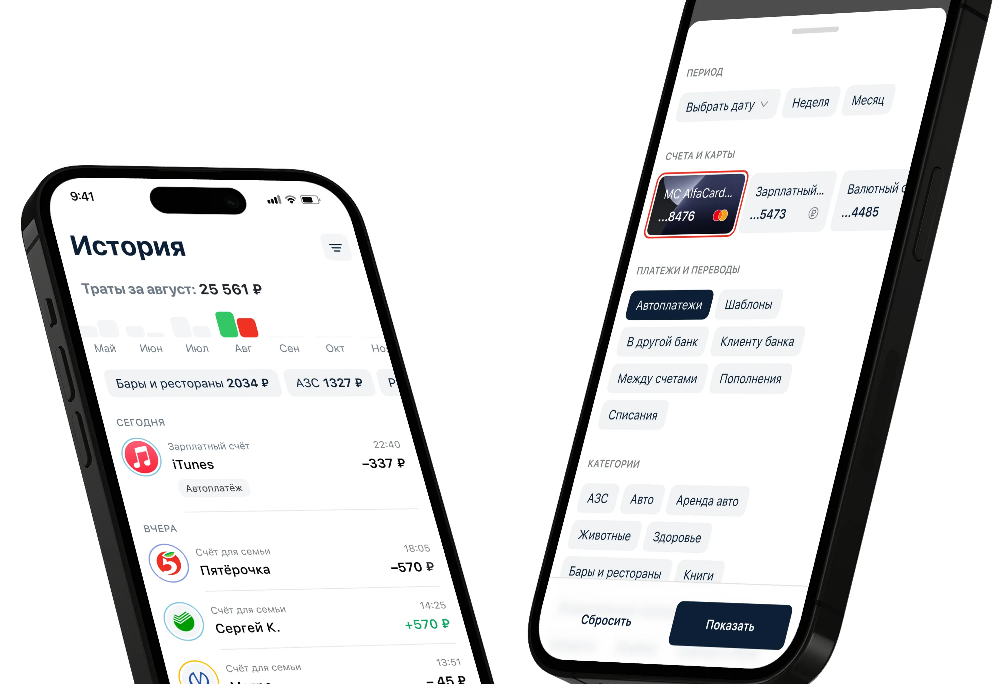
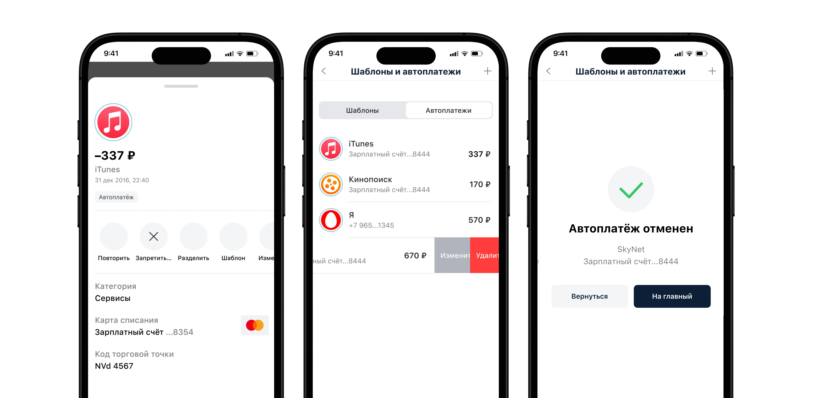

Альфа-Банк. Пользовательское исследование и редизайн раздела Аналитика для iOS
UX-исследование и редизайн раздела финансовой аналитики в мобильном приложении Альфа-Банка. Глубинные интервью, анализ паттернов, прототипирование.

Найти какую аналитику хотят видеть клиенты в разделе и спроектировать решения
20+ JTBD-интервью и 4 частотных сценария
Провёл интервью с клиентами и выяснил, что они используют историю расходов не для «посмотреть статистику», а для конкретных задач: не перетратить, повторить платёж, отменить подписку, свести бюджет. Сгруппировал 4 сценария в 2 сегмента: экономия и оптимизация трат, безопасность и контроль.

Уведомления о расходах на категорию
Из интервью узнали, что люди регулярно перетрачивают и потом не могут дожить до зарплаты. Спроектировал пуш-уведомления: >3 транзакций в категории + >5% остатка = предупреждение. Если баланс всё-таки ушёл в минус — точка для предложения овердрафта.

Столбчатая диаграмма со свайпом вместо 4 тапов и фильтрами
Линейный график показывал тенденцию только за месяц и ничего не давал для принятия решений. Заменил на столбчатую диаграмму за 4 месяца, вывел категории наружу как фильтры.


Контроль подписок и автоплатежей
Исследование показало, что проблема шире подписок: за годы копится десяток автосписаний — связь, интернет, коммунальные. Сделали тег «Автоплатёж» для идентификации и кнопку «Запретить автопополнение» прямо на странице платежа.
